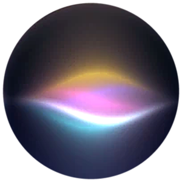

灯光
灯关着
拨一下 · 开灯
文章WRITING
建站的过程、踩过的坑、某天突然想通的一件事。写得不快，但都是真事。
- 正在读取…
作品SELECTED WORK
一格一个，做好再填——点开看我在里面具体做了什么。

关于我正在读取…
信箱GUESTBOOK
写在这里的留言会直接寄到我的邮箱 byuyan@qq.com，不用登录任何账号。旧的公开留言还留在左边，可以翻。
正在打开信箱…
关于ABOUT
2006 年生于安徽黄山，现在在武汉理工大学读数字经济。喜欢把抽象的东西做成看得见的样子：表格、图表、一段能滚动的叙事，或者这间小窝。
这间小窝没有用任何框架，一行行手写：时钟是一位一位滚的机械数字轮，唱片机里几首钢琴是真录音（公共版权），另两条环境音是浏览器实时合成的，留言会直接寄进我的邮箱。